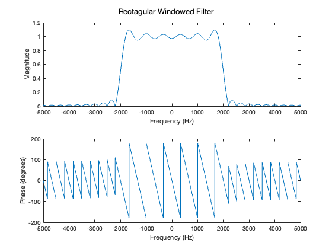
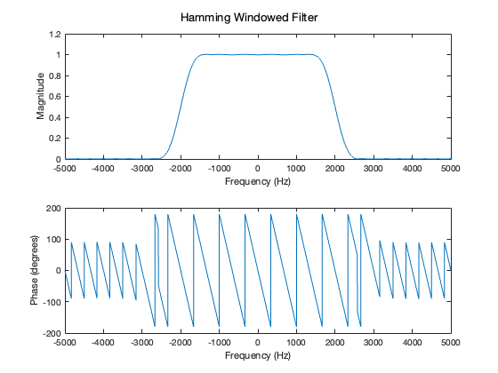
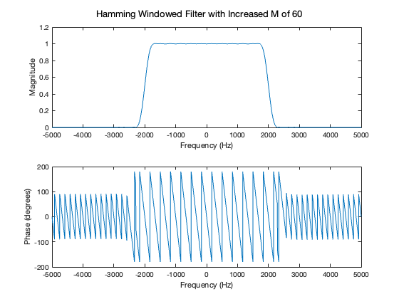
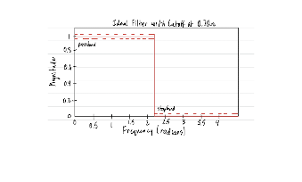
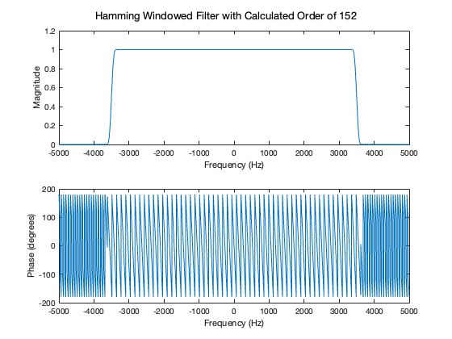

Contents
2.1
clear; close all; clc; % Include DSP-First 'toolbox' to path if not already included if exist('filterdesign.m') == 0 addpath(genpath('filterdesign')); end % ** The DSP System Toolbox was installed for the filterdesign GUI.
Ask if running GUI is needed
%{ valid = 0; while valid == 0 runGUI = input('Would you like to run the filterdesign GUI? (Not required for grading) (Y/N)','s'); if (runGUI == "y" || runGUI =="Y") filterdesign; % Open the filter design GUI valid = 1; elseif runGUI == "n" || runGUI == "N" valid = 1; else disp('Invalid input, type ''Y'' or ''N''') valid = 0; end end %} % M = 30; % wc = 0.4*pi; % 2 * pi * (2000 / 10000) F_samp = 10000; samples = 100000; % Set the sample count for freqz % Rectangular windowing: % In the GUI: % - Select FIR % - Set "Design Method" to "Window" and "Lowpass" % - Set "Window Type" to "Rectagular" % - Set "Order" to "30" % - Set "F_samp" to "10000" % - Set "F_cutoff" to "2000" % - Export coefficients to a file (File → Export Coeffs → Export to File). plot_filter("2_1_rect_coeffs.mat",'Rectagular Windowed Filter',F_samp,samples) % Hamming windowing: % In the GUI: % - Select FIR % - Set "Design Method" to "Window" and "Lowpass" % - Set "Window Type" to "Hamming" % - Set "Order" to "30" % - Set "F_samp" to "10000" % - Set "F_cutoff" to "2000" % - Export coefficients to a file (File → Export Coeffs → Export to File). plot_filter("2_1_hamm_coeffs.mat",'Hamming Windowed Filter',F_samp,samples) % Part a % 1851.2 Hz, |H| = 0.900047 rect_p_edge = 1851.2; % Part b % 2148.3 Hz, |H| = 0.0998619 rect_s_edge = 2148.3; % Part c % 1503.8 Hz, |H| = 0.989997 hamm_p_edge = 1503.8; % Part d % 2496.4 Hz, |H| = 0.009978 hamm_s_edge = 2496.4; % Part e rect_cutoff = (rect_p_edge + rect_s_edge)/2; % Rectangular 1999.8 Hz hamm_cutoff = (hamm_p_edge + hamm_s_edge) / 2; % Hamming 2000.1 Hz % The cutoff frequency is 2000 Hz. So yes, the cutoff frequency is halfway % between the passband and stopband edges for both filters. 
2.2
Part a
rect_t_width = rect_s_edge - rect_p_edge; % Rectangular 297.1 Hz hamm_t_width = hamm_s_edge - hamm_p_edge; % Hamming 992.6 Hz % Part b % When comparing two Mth order filters, the one with a smaller transition width will have larger ripples. % Part c % M = 60 % wc = 0.4*pi; % 2 * pi * (2000 / 10000) % Hamming windowing with increased M: % In the GUI: % - Select FIR % - Set "Design Method" to "Window" and "Lowpass" % - Set "Window Type" to "Hamming" % - Set "Order" to "60" % - Set "F_samp" to "10000" % - Set "F_cutoff" to "2000" % - Export coefficients to a file (File → Export Coeffs → Export to File). plot_filter("2_2_hamm2_coeffs.mat",'Hamming Windowed Filter with Increased M of 60',F_samp,samples); % Pb = 1751.9 Hz, 0.990007 % Sb = 2248.1 Hz, 0.0100021 hamm2_p_edge = 1751.9; hamm2_s_edge = 2248.1; hamm2_t_width = hamm2_s_edge - hamm2_p_edge; % Tb = 496.2 Hz % Part d % Tb = C / L % L = M + 1 C1 = hamm_t_width * (30 + 1); % = 3.0771e+04 C2 = hamm2_t_width * (60 + 1); % = 3.0268e+04 % When the order doubles, the transition width is halved (almost exactly). % This confirms the equation of transition width = C / L, as the transition % width and order are inversely proportional.
2.3
% Part a figure; I = imread('idealfiltersketch.png'); imshow(I); % Part b hamm3_p_edge = 0.68 * pi / (2 * pi) * 10000; % 3400 Hz hamm3_s_edge = 0.72 * pi / (2 * pi) * 10000; % 3600 Hz hamm3_t_width = hamm3_s_edge - hamm3_p_edge; % 200 Hz C = (C1 + C2) / 2; L = C / hamm3_t_width; % ~ 153 M = L - 1; % ~ 152 % Part c hamm3_cutoff = (hamm3_p_edge + hamm3_s_edge) / 2; % 3500 Hz % Hamming windowing with order from window design formula % In the GUI: % - Select FIR % - Set "Design Method" to "Window" and "Lowpass" % - Set "Window Type" to "Hamming" % - Set "Order" to "152" % - Set "F_samp" to "10000" % - Set "F_cutoff" to "3500" % - Export coefficients to a file (File → Export Coeffs → Export to File). plot_filter("2_3_hamm3_coeffs.mat",'Hamming Windowed Filter with Calculated Order of 152',F_samp,samples) % 3401.8 Hz, |H| = 0.990034 hamm3_p_edge = 3401.8; % 3598.2 Hz, |H| = 0.009972 hamm3_s_edge = 3598.2; % The passband value of 0.68*pi converts to 3400 Hz, and the stopband value % of 0.72*pi converts to 3600 Hz. These values are very similar to the % values found from graphing the coefficients, so the frequency response % does meet the given specs. 